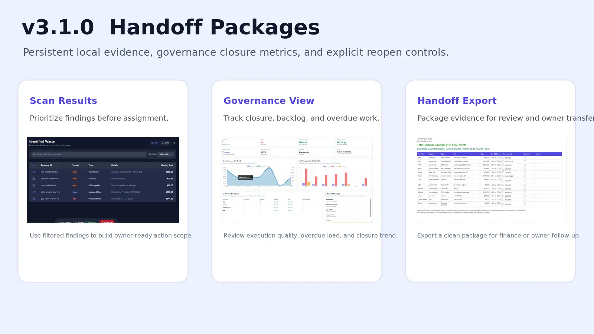

v3.1.0: Handoff Packages and Governance Lifecycle Closure
This release turns handoff into a persistent local package, adds closure-focused governance metrics, and requires explicit reopen reasoning before closed findings move back into owner execution.

Finding waste is only the first step. Teams still need to package evidence for the next owner, measure whether findings actually close, and avoid reopening work without context. v3.1.0 sharpens that part of the workflow.
What changed in v3.1.0
- Persistent handoff packages: handoff exports are now stored as local package records instead of existing only as files that can be lost or detached from context.
- Lifecycle closure metrics: governance reporting now includes lifecycle totals, open backlog, assigned/in-progress/verified counts, overdue open findings, reopened open findings, and derived closure rates.
- Explicit reopen controls: closed findings can no longer slip back into assignment without a reopen reason. The UI now asks for that reason before reassignment.
- Stronger validation: new tests cover handoff persistence, lifecycle execution summaries, and governance scorecard rate calculations.
Why this matters
Before this release, a team could detect waste and even export evidence, but the execution trail still had weak spots:
- handoff files could be regenerated without a stable local record;
- governance metrics told you how scans were performing, but not whether execution was actually closing findings;
- a closed item could be reassigned without a clear operator-visible reopen step.
v3.1.0 tightens those gaps. The result is better continuity between the person who finds waste, the person who reviews it, and the person who owns action.
Operator benefits
- Less evidence drift: recent handoff packages remain available locally for re-export and audit review.
- Safer ownership changes: a closed finding now needs an explicit reopen explanation before it moves back into assigned execution.
- Better weekly review: governance views now show closure rate, overdue open count, and reopened open count, not just detection-side metrics.
- Cleaner lifecycle semantics: when work moves backward, outdated phase timestamps are cleared so the record matches the true workflow state.
Finance and governance value
For finance, handoff packaging is more useful when the underlying record is stable and re-runnable. For governance reviewers, detection metrics alone are not enough. They need to know:
- how many findings are still open,
- how many are overdue,
- how many had to be reopened,
- and whether closure is improving over time.
Those are now first-class parts of the local governance scorecard.
How to use it
From the scan results screen:
- Create a handoff package from the current filtered or selected scope.
- Use the stored package list to re-export the same package later as TXT, CSV, or JSON.
- Open Governance to review closure rate, overdue open findings, and reopened open findings.
- If a closed finding must go back to an owner, enter a reopen reason during reassignment so the lifecycle record stays explainable.
Who should care first
- Solo operators: you now get better local continuity between scan, export, and follow-up without adding a hosted dependency.
- Manager-review teams: governance views are more useful for weekly operating rhythm because they include execution health, not only scan yield.
- Audit-sensitive environments: explicit reopen reasoning reduces ambiguity when an item that was previously marked closed returns to active work.
Implementation notes
This release keeps the Community boundary intact. Evidence stays local. Handoff packages are stored locally. The workflow is stronger, but it is still local-first rather than SaaS-coordinated.
The repository now also includes targeted regression coverage for:
- handoff package persistence and retrieval;
- lifecycle execution summary calculations;
- governance scorecard lifecycle-derived rates;
- reopen and rollback timestamp semantics.
Versioning note
This release is aligned to the active Community line. The repository and shipped application packaging now move together at 3.1.0 to avoid conflict with the existing Community 3.0.1 release and the Pro 3.0.3 line.